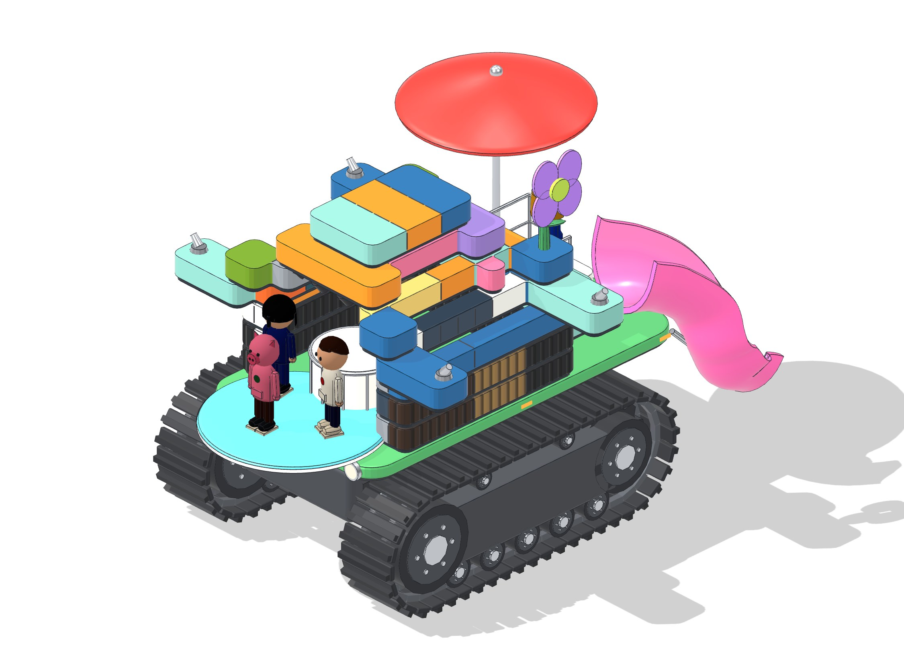

Architects draw a building from above (a plan) and from each side (elevations). Here is my machine drawn the same way, to scale: 1 square is 1 metre on the beach.
Plan, from abovethe stage is at the bottom
10 m longfrom the stage to the end of the slide
6.4 m widefrom one fountain to the other
7 m tallto the top of the flower
6.8 m trackseach as long as a big car and a half
The machine in 3D

- 1
Caterpillar tracks. No horse needed: it drives itself over the sand and into the sea.
- 2
A stage for a rock band, round, at the front, under a roof.
- 3
Fountains at the tips of four arms, to cool everyone down.
- 4
A curly slide from the back deck down into the sea.
- 5
A shade on a tall mast over the slide.
- 6
A flower that spins in the wind, like a little wind turbine.
- 7
Changing rooms inside, like a Victorian machine.
- 8
A rooftop in three colours.
Your turnDraw your own machine from above. 1 square is 1 metre: how long will yours be?
Left sideThe stage is on the left, the slide on the right. Can you find the flower that spins in the wind?
Right sideCount the squares: how tall is the deck? How long is the whole machine?